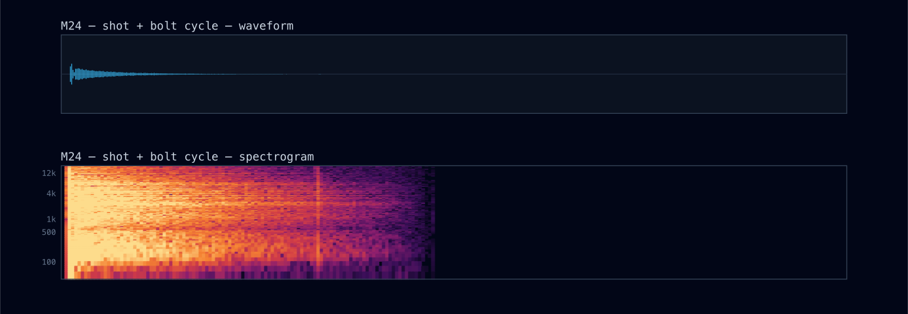
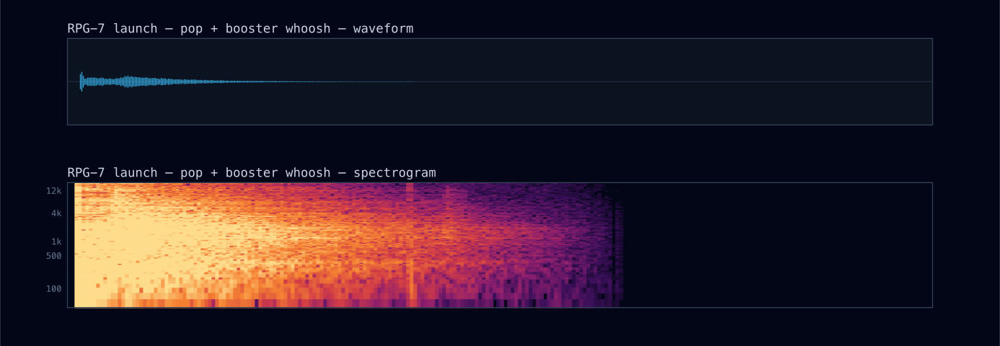
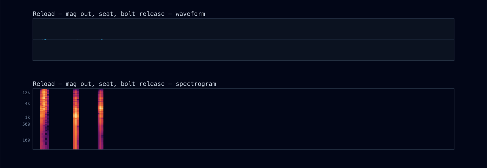
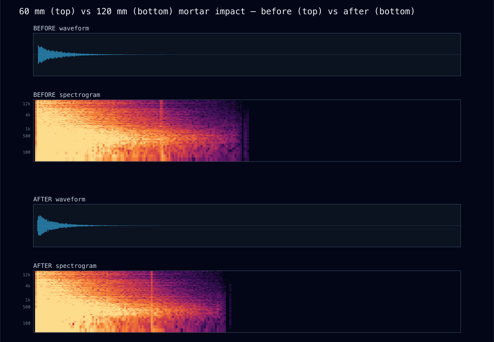
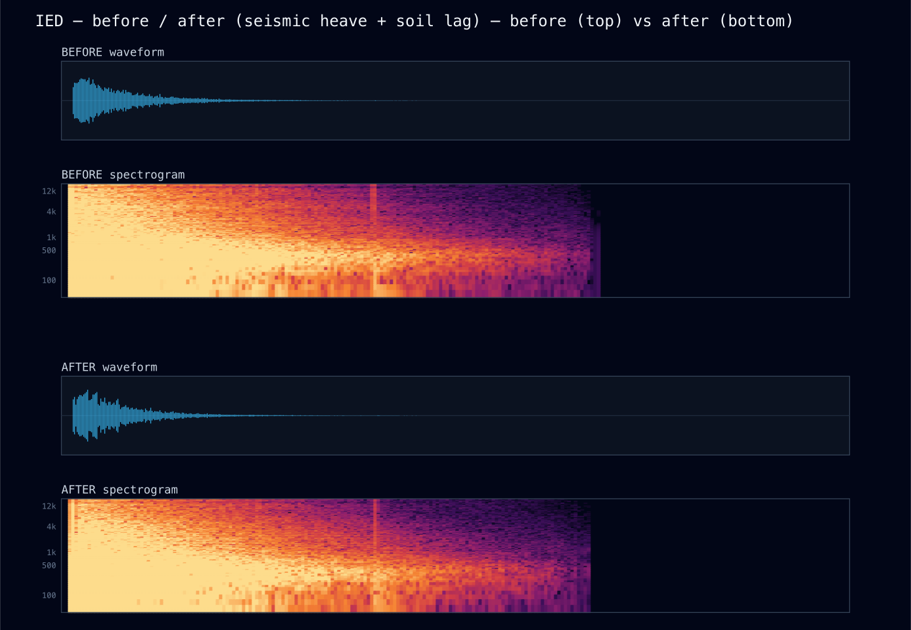
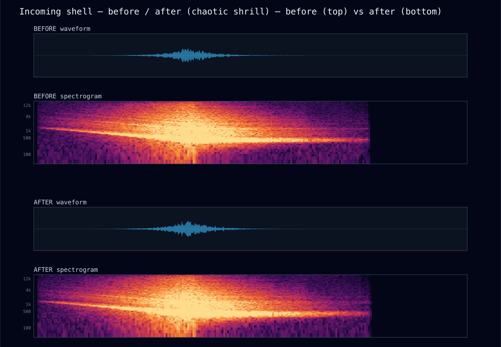
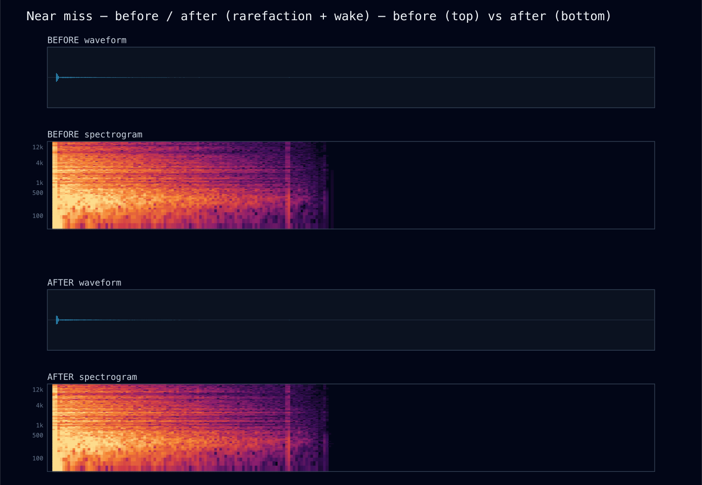

PKM (7.62×54R)
Calibre Voices — every weapon gets its real sound
2026-06-11 · lib/sim + lib/audio · all sound 100% procedural (zero binary assets) ·
oracle: scripts/audio-render.ts (offline render of the REAL synth graph) · every number below is from the
seed-pinned oracle, before = HEAD@54a3091, after = this pass
What this pass did
One sentence of sim code unlocked the whole thing: the engine now stamps which weapon produced
each muzzle/blast effect (Effect.weapon, combat.ts). Before this, the audio layer knew only
faction and "is it a machine gun" — so an M2 .50, an RPG leaving the tube, an M9 pistol and an
M4 all collapsed into two faction rifle cracks. The synth's own comment admitted it: "we have no
per-weapon id on the Effect." Now the .50s hammer, rockets pop-and-whoosh, 40 mm bloops, bolt guns cycle
their bolts, pistols bark, mortars grade by calibre — and the battlefield gained sounds it never had:
the RPG launch, the Mk19's thunk, and a man two metres away swapping mags.
1 · The calibre ladder
A soldier tells weapons apart by ear before he sees anything — the report's pitch and weight ARE the
information. That ladder is now real and measurable (spectral centroid, solo/near):
M9 7701 Hz > M4 6860 > M24 6450 > Enfield 5876 > DShK 5242. The .50s needed more than a
deeper bandpass: the shared 6 kHz attack transient had made every gun equally bright, so the transient
itself is now weapon-tinted (transHP/transPeak, the M2's attack is a low WHUMP).
the medium gun vs the heavy gunthe dreaded ridge gun is darker by 772 Hz and you feel it before you place it
DShK (.50)

the rifle vs the sidearma pistol is a small sharp bark, nearly subless — the last-resort sound
M4 (5.56)
M9 (9 mm)
M24 sniper — shot, then the bolt cyclethe two-clack extract/chamber ~0.5 s after the report; the Enfield does it slower
before
— did not exist —
after

audible: — → 920 mscentroid: — → 6450 Hz
2 · The missing battle sounds
2.1 · The RPG launch (new)
Why: "RPG!" is one of the defining calls of the Korengal accounts — and the game only voiced the impact. The launch is now its own event: booster POP, then the sustainer motor lights ~10 m out and the whoosh rises as the rocket departs. AT4/SPG-9 (recoilless) get the other signature: no flight motor, one violent venturi bang with a heavy rearward wash.
audible: — → 1100 msrms: — → -35.36 dB
RPG-7 leaving the tubepop → rising whoosh; in game the blast arrives separately at the impact point
before
— did not exist —
after

two launch physics, two soundsthe RPG departs; the AT4 just detonates a charge behind the gunner's shoulder
RPG-7 (booster + motor)
AT4 (recoilless bang)
2.2 · The 40 mm launchers (new)
M320 — the hollow blooptube resonance ~280→180 Hz; almost comic until you know what follows
before
— did not exist —
after
hand launcher vs crew-served AGLthe Mk19's heavy bolt clanks 55 ms after the deep thunk
M320 bloop
Mk 19 thunk
2.3 · Reload (new)
Why: a fight breathes — bursts, then lulls where men service weapons. The sim already modeled
reloading (u.reloading); it just happened silently. It now emits a reload effect →
a strictly near-field cue: mag-out clack, kit rattle, mag seated, bolt release, at −51.6 dB RMS. You will
only ever hear it standing next to your own men in a lull — which is exactly where it belongs.
rms: — → -51.59 dBaudible: — → 520 ms
reload, solo/nearmag out → seat → bolt release over ~0.6 s
before
— did not exist —
after

3 · Mortar calibre gradation
Why: a 60 mm crump and a 120 mm valley-shaker were the same sound at the same volume. Now
BLAST_SCALE grades sub onset and rumble length by calibre (duration grows faster than pitch
falls — the big tube ROLLS). The honest metric story: centroid and HF% barely moved because broadband noise
dominates them by bin count, so the oracle gained a low-band share metric (lf200Pct —
energy below 200 Hz, where a blast's calibre actually lives): 60 mm 14.1% vs 120 mm 19.9%.
the small tube vs the big tubesame peak discipline, different event: the 120's rumble is ~2× longer and sits lower
60 mm impact
120 mm impact

4 · Realism upgrades to existing sounds
4.1 · The IED — soil heave, not a big firecracker
Why: a buried charge doesn't crack like shell HE — the ground HEAVES. The sub-bass and a new seismic ground wave (26→16 Hz, 1.1 s, riding the soft-clipper so harmonics carry it on small speakers) now lead, the airborne transient arrives 8 ms late through the lofted soil cap, and the rumble is duller (350→280 Hz) and longer. Centroid drops 5233 → 3951 Hz; 37.9% of the energy now sits below 200 Hz.
centroid: 5233 Hz → 3951 HzLF share: — → 37.88%rms: -21.06 dB → -19.23 dB
IED — before / afterbefore: a loud blast; after: the ground moves first
before
after

4.2 · The incoming shell — chaotic, not musical
Why: the whistle swept cleanly — physically a siren, not a tumbling shell. A second incommensurate fast wobble (23–37 Hz, deepening) now rides the pitch so the two modulators never phase-lock, and a broadband shrill (high-Q noise fused to the tone) adds the tearing component. Keyed off the cue hash: no two shells wail alike, same seed wails the same.
audible: 2260 ms → 2400 mscentroid: 1707 Hz → 1675 Hz
incoming — before / afterbefore: a clean descending tone; after: it tears
before
after

4.3 · The near miss — the full N-wave
Why: a passing supersonic round is compression THEN rarefaction THEN turbulent wake — the old synth had only the leading snap. Added: the rarefaction lobe 1.5 ms behind (softer, lower — the "suck" that completes the N) and a 7 kHz wake sizzle. Centroid 7794 → 8443 Hz (the wake is the brightness).
near miss — before / aftersubtle by design — the snap-crack of a round passing close
before
after

4.4 · Radio net texture (sparse by design)
Why: a combat net has crosstalk and multipath dropouts — but texture on EVERY keying reads as a broken radio. So it keys off the cue hash at the extremes only: ~15% of squelches carry a faint second station stepping on the net, ~10% stutter once before the beep. The default squelch is byte-identical to before (the palette scene metrics did not move) — restraint you can verify in the table below.
5 · The numbers, all in one table
| scene | rms dB | centroid Hz | audible ms | LF<200 Hz % |
|---|---|---|---|---|
| palette-ied | -21.06 → -19.23 | 5233 → 3951 | 1300 → 1300 | — → 37.88 |
| palette-incoming | -29.5 → -29.3 | 1707 → 1675 | 2260 → 2400 | — → 0.18 |
| palette-nearmiss | -38.72 → -38.84 | 7794 → 8443 | 420 → 420 | — → 17.93 |
| palette-hmg_us | — → -30.41 | — → 5328 | — → 1120 | — → 2.15 |
| palette-hmg_insurgent | — → -30.27 | — → 5242 | — → 1120 | — → 2.18 |
| palette-rocket_launch | — → -35.36 | — → 5063 | — → 1100 | — → 5.16 |
| palette-gl_launch | — → -40.14 | — → 3905 | — → 740 | — → 5.77 |
| palette-reload | — → -51.59 | — → 6559 | — → 520 | — → 0.69 |
| wpn-m9 | — → -40.42 | — → 7701 | — → 740 | — → 3.23 |
| wpn-m24 | — → -36.49 | — → 6450 | — → 920 | — → 3.2 |
| wpn-enfield | — → -35.19 | — → 5876 | — → 960 | — → 2.57 |
| blast-m60 | — → -26.17 | — → 5987 | — → 1140 | — → 14.13 |
| blast-m120 | — → -23.25 | — → 5952 | — → 1140 | — → 19.9 |
| palette-radio | -22.34 → -22.34 | 1784 → 1784 | 120 → 120 | — → 0.01 |
| palette-muzzle_us | -37.65 → -37.65 | 6860 → 6860 | 900 → 900 | — → 2.94 |
| firefight | -26.74 → -25.29 | 5334 → 5184 | 18140 → 18280 | — → 6.55 |
Oracle after this pass: RENDER OK — 39 scenes (12 new), 13/13 assertions green, incl. 5 new: the .50 darker than the PKM by 772 Hz · RPG launch sustains 1100 ms · reload whisper (−51.6 dB, 520 ms) · mortar LF gradation 19.9 vs 14.1% · M24 bolt cycle spans 920 ms. The firefight scene now contains the M2 answering and an RPG launch, hence its small rms/centroid shift. Plus scripts/audio-probe.ts green (1:1 cue mapping now incl. reload effects, determinism, layer purity) and a 3-seed held-out run where the new cues emerged from ORGANIC combat: hmg_us 75–900 cues (the COP's M2), gl_launch 34 (Mk19), reload 5–151, M9 sidearms 42–130.
6 · Honest residuals
- rocket_launch never fired organically in the 3 held-out runs — RPG gunners carry one round and these fights didn't trigger it. The routing is proven by a direct mapper check (rpg7/spg9/at4 → rocket_launch) and the synth by the oracle; an organic occurrence remains unobserved.
- Backblast is folded into the launch sound, not a separate directional cue — a true listener-relative backblast cone needs facing-aware spatialization. Deferred, recorded.
- No wounded vocalizations. Deliberate: synthesized screams are the same trap as the rejected synthesized radio voice ("reads cheesy faster than squelch reads sparse"), with higher stakes. The casualty's weight stays in the radio traffic and the visual.
- No MEDEVAC rotor — still no aircraft entity in the sim to attach it to (recorded negative).
- SAW vs M4 share a voice — same 5.56 calibre; the cadence difference already comes from the sim's true cyclic timing, which is the audible difference in reality.
- npm run lint: 0 problems in lines this pass authored (two findings in combat.ts predate it, outside this pass's hunks). Repo-wide count unchanged in spirit; not fixed here.
7 · How to verify this yourself
npx tsx scripts/audio-render.ts— re-renders all 39 scenes, prints the table + 13 assertions (expect RENDER OK).npx tsx scripts/audio-probe.ts— mapper purity/determinism/1:1 incl. reload (expect AUDIO OK).- In game: watch a COP defense — the M2 hammers under the rifle fire; an insurgent RPG announces itself before the blast; in a lull, zoom to your men and listen for the mag change.